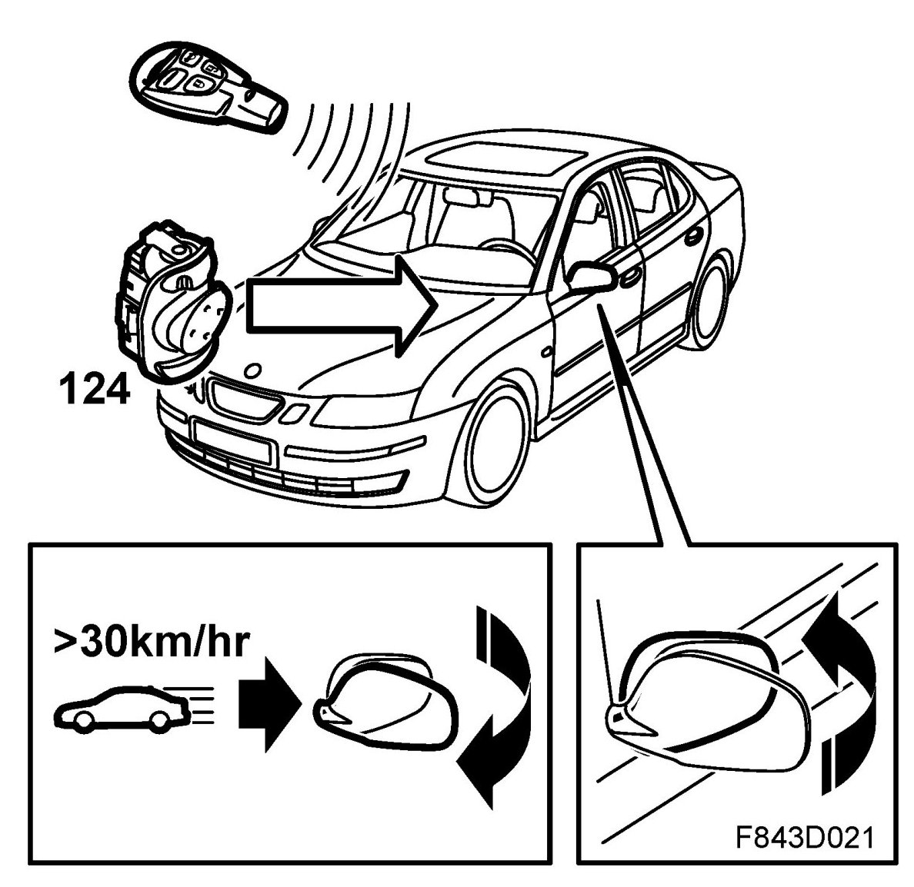

Comfort Function, Brief Description
Comfort Function, Brief Description
Overview

The window lifts, interior lighting, electrically adjustable seats, door mirrors and sunroof can under certain circumstances be operated even when the ignition is not ON. In addition, the ignition switch and door buttons are illuminated and the SID clock and milometer displayed. If the hazard warning lights are on, this is displayed on the MIU. This is known as the comfort function and is controlled by the rear left door module (RLDM). The RLDM collects all the necessary data from bus and transmits a message for comfort function ON or OFF.